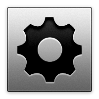

Horus is a software system which wich allows to control IL‑2 Sturmovik dedicated servers and to gather statistics from them. It is an alternative to IL‑2 Server Commander and FBDaemon.
| System consists of | ||
|  |  |
 |
| Commander | Web Application | Mission Generator |